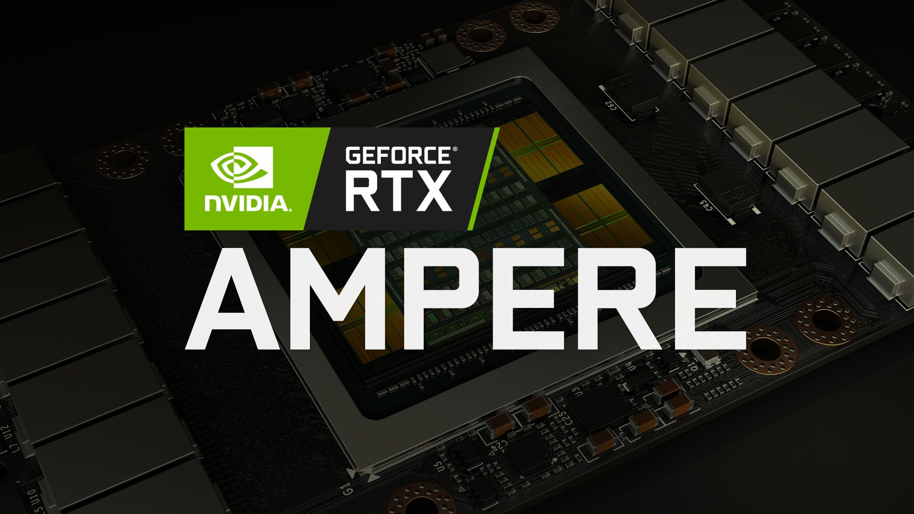

好记性不如烂笔头

如果我们使用 NVSMI 的显卡，经常会使用到 nvidia-smi 这个命令。该命令提供监控 GPU 使用情况和更改 GPU 状态的功能，并且还是一个跨平台工具，可以在多种 Linux 和 Windows 服务器上面运行。而且，只要我们安装好了驱动后就可以直接使用该工具了。
- [1] 命令默认的英文输出
+-----------------------------------------------------------------------------+
| NVIDIA-SMI 440.33.01 Driver Version: 440.33.01 CUDA Version: 10.2 |
|-------------------------------+----------------------+----------------------+
| GPU Name Persistence-M| Bus-Id Disp.A | Volatile Uncorr. ECC |
| Fan Temp Perf Pwr:Usage/Cap| Memory-Usage | GPU-Util Compute M. |
|===============================+======================+======================|
| 0 GeForce RTX 208... On | 00000000:04:00.0 Off | N/A |
| 24% 47C P2 243W / 250W | 8971MiB / 11019MiB | 8% Default |
+-------------------------------+----------------------+----------------------+
+-----------------------------------------------------------------------------+
| Processes: GPU Memory |
| GPU PID Type Process name Usage |
|=============================================================================|
| 0 57191 C python 8959MiB |
+-----------------------------------------------------------------------------+
- [2] 输出对应的中文解释
+-----------------------------------------------------------------------------+
| NVIDIA-SMI工具版本 Driver驱动版本 CUDA的版本 |
|-------------------------------+----------------------+----------------------+
| 数量编号 显卡名称 持续模式的状态| GPU总线 是否初始化 | 是否开启错误和纠正技术 |
| 风扇转速 GPU温度 性能状态 GPU功耗| 显存使用率 | GPU使用率 计算模式 |
|===============================+======================+======================|
| 0 GeForce RTX 208... On | 00000000:04:00.0 Off | N/A |
| 24% 47C P2 243W/250W | 8971MiB / 11019MiB | 8% Default |
+-------------------------------+----------------------+----------------------+
+-----------------------------------------------------------------------------+
| Processes: |
| 使用的GPU编号 进程PID 进程类型 进程名称 GPU内存使用情况 |
|=============================================================================|
| 0 57191 C python 8959MiB |
+-----------------------------------------------------------------------------+
- [3] 常用参数注释说明
root@app-5c6c125fdf-k349h:/opt/app# nvidia-smi -h
NVIDIA System Management Interface -- v430.50
nvidia-smi [OPTION1 [ARG1]] [OPTION2 [ARG2]] ...
-h, --help 打印使用信息并退出
列表显示选项:
-L, --list-gpus 以列表形式显示连接到系统的GPU信息
-B, --list-blacklist-gpus 以列表形式显示系统中被列入黑名单的GPU信息
汇总显示选项:
<no arguments> 显示系统的GPU的汇总信息
[子项可以多选]
-i, --id= 指定显示特定的GPU信息
-f, --filename= 将输出内容保存到指定文件
查询选项:
-q, --query 显示GPU和Unit信息
[子项可以多选]
-u, --unit 显示Unit信息
-i, --id= 指定显示特定的GPU信息
-f, --filename= 将输出内容保存到指定文件
-x, --xml-format 生成XML输出
-d, --display= 只显示选定的信息，多选使用逗号分隔:
MEMORY, UTILIZATION, ECC, TEMPERATURE,
POWER, CLOCK, COMPUTE, PIDS,
PERFORMANCE, SUPPORTED_CLOCKS, PAGE_RETIREMENT,
ACCOUNTING, ENCODER_STATS, FBC_STATS
选择查询选项:
[选择其中一个]
--query-gpu= 显示指定GPU的信息
示例: nvidia-smi --query-gpu=memory.free --format=csv
使用 nvidia-smi --help-query-gpu 获得更多信息
--query-supported-clocks= 列出支持的clocks选项
示例: nvidia-smi --query-supported-clocks=timestamp --format=csv
使用 nvidia-smi --help-query-supported-clocks 获得更多信息
--query-compute-apps= 列出当前运行的进程列表
示例: nvidia-smi --query-compute-apps=pid --format=csv
使用 nvidia-smi --help-query-compute-apps 获得更多信息
[必选子项]
--format= 用逗号分隔的格式选项列表:
csv - 逗号分隔值
noheader - 跳过带有列标题的第一行
nounits - 不要打印数值单位
[子项可以多选]
-i, --id= 指定显示特定的GPU信息
-f, --filename= 将输出内容保存到指定文件
设备修改选项:
[子项可以多选]
-pm, --persistence-mode= 设置持久性模式: 0/DISABLED, 1/ENABLED
-e, --ecc-config= 切换ECC的支持: 0/DISABLED, 1/ENABLED
-p, --reset-ecc-errors= 重置ECC错误计数: 0/VOLATILE, 1/AGGREGATE
-c, --compute-mode= 为计算应用程序设置模式: 0/DEFAULT, 1/EXCLUSIVE_PROCESS, 2/PROHIBITED
-r --gpu-reset GPU的触发复位
-vm --virt-mode= 切换GPU虚拟化模式
[子项可以多选]
-i, --id= 指定显示特定的GPU信息
设备监控:
dmon 以滚动格式显示设备状态
使用 nvidia-smi dmon -h 获得更多信息
daemon 作为守护进程在后台运行并监视设备
使用 nvidia-smi daemon -h 获得更多信息
replay 用于重播/提取由守护进程生成的持久状态
使用 nvidia-smi replay -h 获得更多信息
进程监控:
pmon 以滚动格式显示进程状态
使用 nvidia-smi pmon -h 获得更多信息
- [4] 常用命令记录
# 显示所有GPU的当前信息状态
> nvidia-smi
# 指定某个GPU
> nvidia-smi –i xxx
# 动态刷新信息(默认5s刷新一次)
> nvidia-smi –l xxx
# 将查询的信息输出到具体的文件中
> nvidia-smi –f xxx
# 查看显卡型号
> nvidia-smi -L
# 查询所有GPU的当前详细信息
> nvidia-smi -q
# 显示单元而不是GPU的属性
> nvidia-smi –q –u
# 指定具体的GPU或unit信息
> nvidia-smi –q –i xxx
# 将查询的信息输出到具体的文件中
> nvidia-smi –q –f xxx
# 将查询的信息以xml的形式输出
> nvidia-smi –q –x
# 指定显示GPU卡某些信息
# 参数: MEMORY, UTILIZATION, ECC, TEMPERATURE, POWER,CLOCK, COMPUTE, PIDS
# 参数: PERFORMANCE, SUPPORTED_CLOCKS, PAGE_RETIREMENT,ACCOUNTING
> nvidia-smi -q –d xxx
# 动态刷新信息
> nvidia-smi –q –l xxx
# 选择性查询选项
> nvidia-smi --query-gpu=gpu_name,gpu_bus_id,vbios_version--format=csv